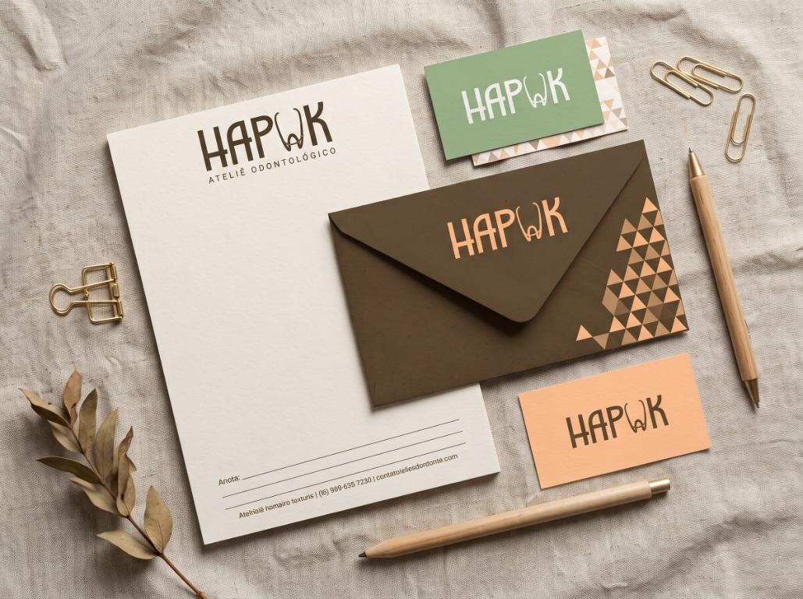
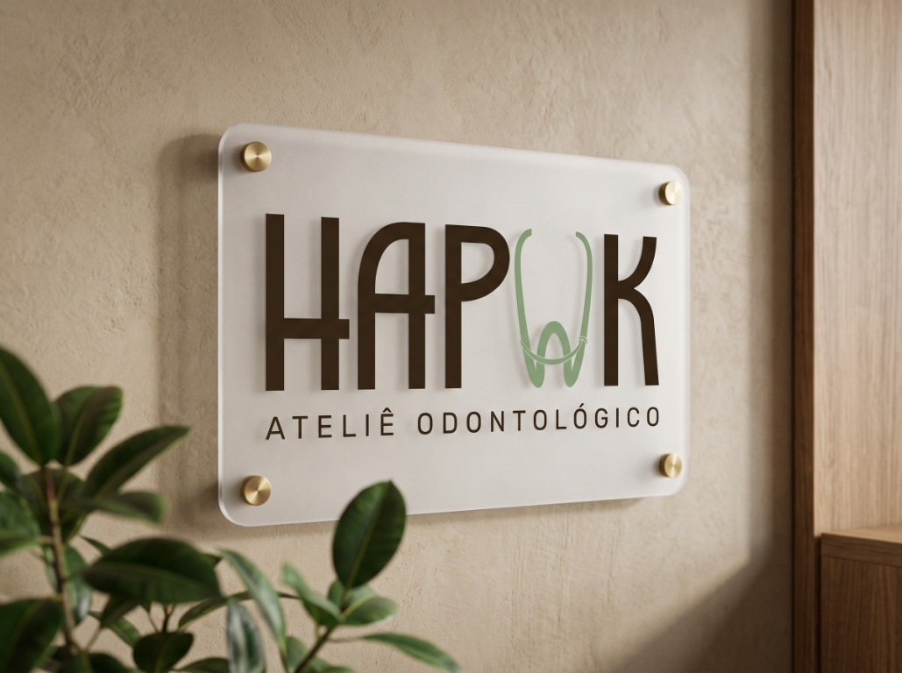
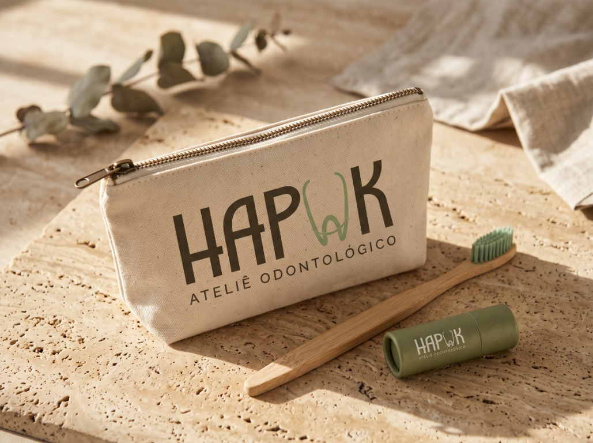
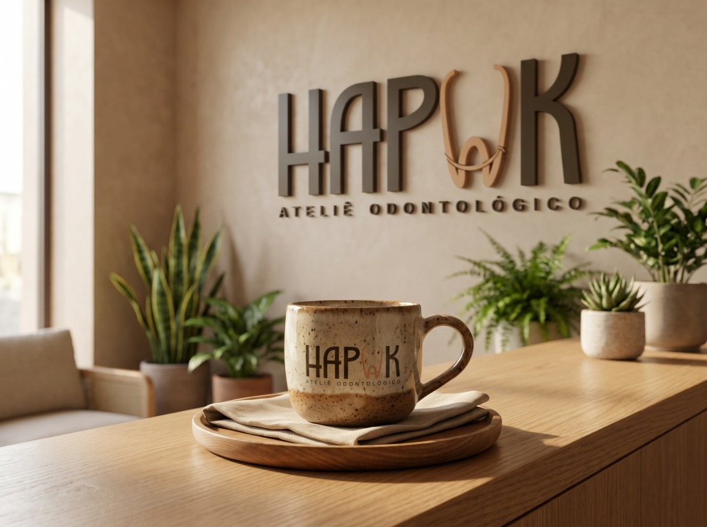

Hapuk
Ateliê Odontológico
O setor odontológico tradicionalmente carrega uma estética fria, clínica e impessoal, que muitas vezes gera ansiedade e distanciamento nos pacientes. O Ateliê Odontológico Hapuk nasceu com a proposta de subverter essa lógica, transformando o cuidado bucal em uma experiência acolhedora, estética e artesanal — como um verdadeiro ateliê. O desafio foi construir uma identidade visual que transmitisse alta precisão técnica e equilíbrio, mas que ao mesmo tempo envolvesse o paciente em uma atmosfera de calor humano, leveza e atendimento personalizado.
A linguagem visual foi construída sobre o equilíbrio entre o rigor técnico e a naturalidade. No logotipo, a tipografia de traços alongados e modernos integra sutilmente a silhueta de um dente contornado por um fio dental na letra “U”, traduzindo o cuidado artesanal em um símbolo proprietário e cheio de personalidade. Como suporte gráfico, elementos triangulares geométricos atuam como estrutura central, representando a precisão, a base sólida e a evolução contínua. A paleta cromática foge do branco hospitalar ao combinar a estabilidade e o acolhimento do marrom escuro com a vitalidade do laranja pêssego e o frescor saudável do verde sálvia, criando uma conexão imediata de confiança e bem-estar.




#432e2d#e8a078#879675#f3ece2“Um ateliê onde a precisão do cuidado encontra a leveza de se sentir em casa.”— P.TR para Ateliê Odontológico Hapuk